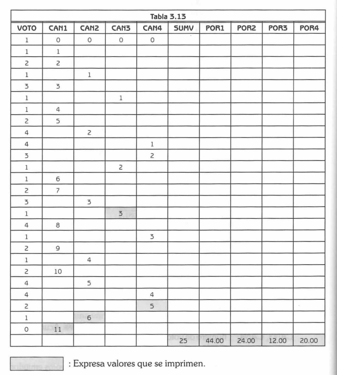

Descripción del problema
Supóngase que en una reciente elección hubo cuatro candidatos (con identificadores 1, 2, 3, 4). El programa debe calcular el número de votos para cada candidato y el porcentaje que obtuvo respecto al total de votantes. Los votos se introducen de manera desorganizada, terminando con un cero.
Datos:
- VOTO: Variable de tipo entero que representa el voto de un candidato.
- CAN1, CAN2, CAN3, CAN4: Variables acumuladoras de votos por candidato.
- SUMV: Total de votos emitidos.
- POR1, POR2, POR3, POR4: Porcentaje de votos obtenidos por cada candidato.
Diagrama de flujo
Tabla de seguimiento

Ejemplo de lista de votos:
13142214111213140